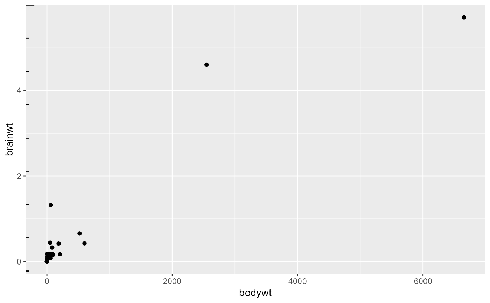
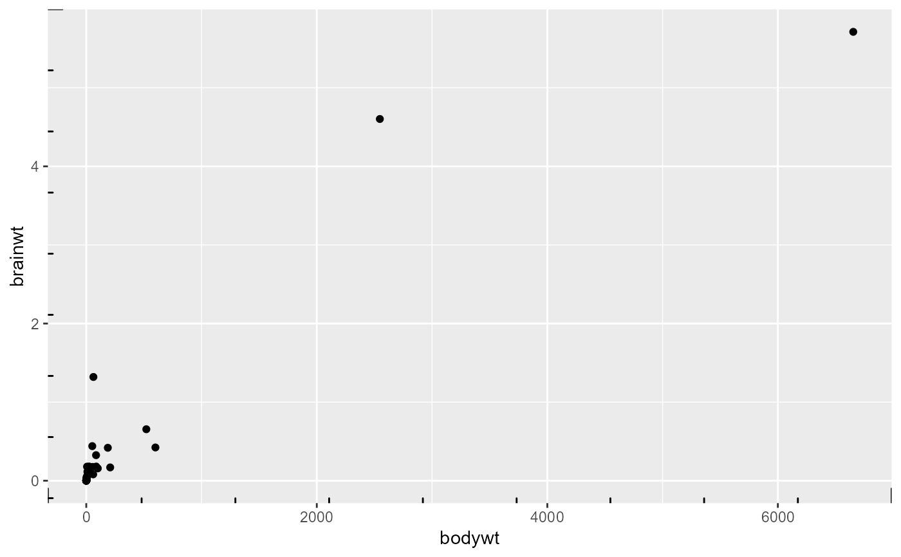
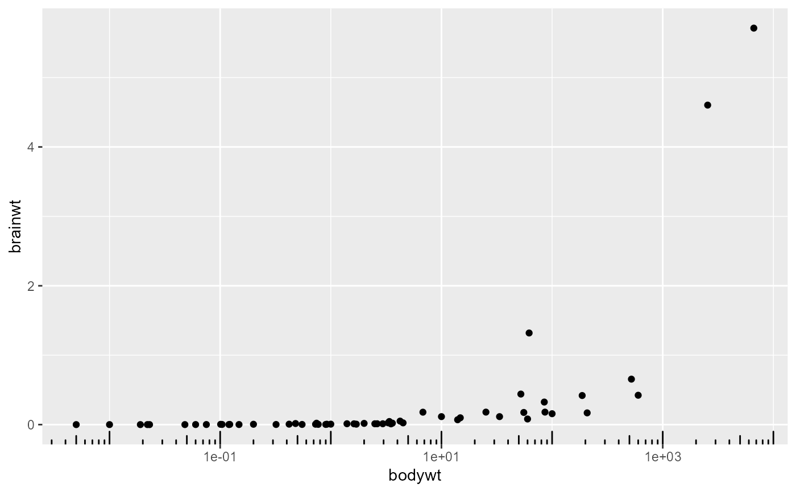
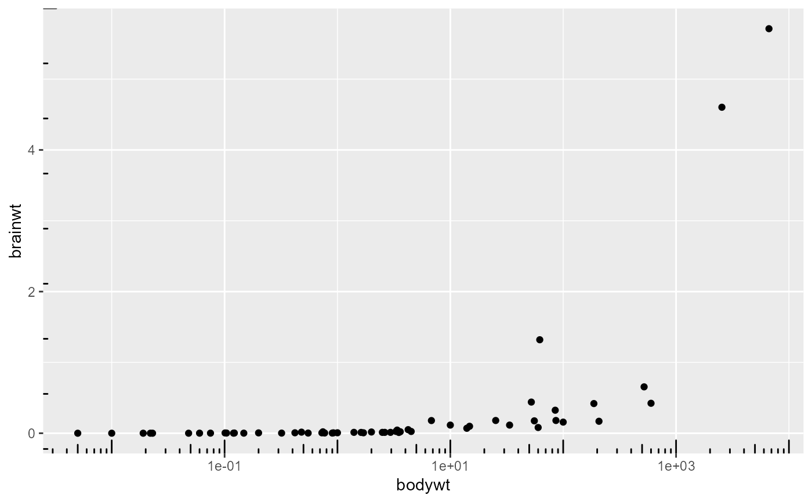
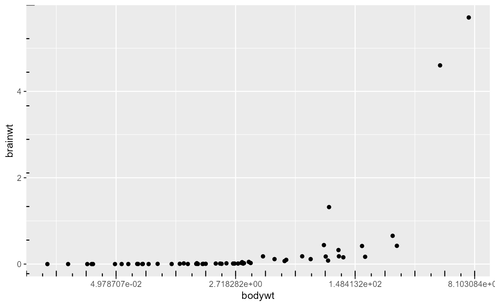
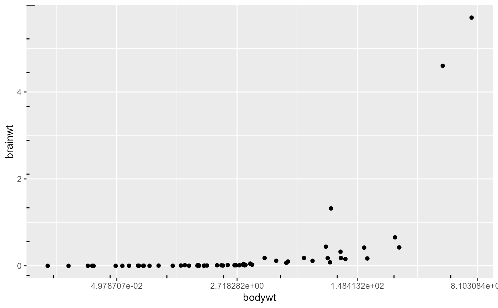

This annotation adds tick marks to an axis
Arguments
- sides
a string that controls which sides of the plot the log ticks appear on. It can be set to a string containing any of
"trbl", for top, right, bottom, and left.- scale
character, vector of type of scale attributed to each corresponding side, Default: 'identity'
- scaled
is the data already log-scaled? This should be
TRUE(default) when the data is already transformed withlog10()or when usingscale_y_log10. It should beFALSEwhen usingcoord_trans(y = "log10").- short
a
grid::unit()object specifying the length of the short tick marks- mid
a
grid::unit()object specifying the length of the middle tick marks. In base 10, these are the "5" ticks.- long
a
grid::unit()object specifying the length of the long tick marks. In base 10, these are the "1" (or "10") ticks.- colour
Colour of the tick marks.
- size
Thickness of tick marks, in mm.
- linetype
Linetype of tick marks (
solid,dashed, etc.)- alpha
The transparency of the tick marks.
- color
An alias for
colour.- ticks_per_base
integer, number of minor ticks between each pair of major ticks, Default: NULL
- ...
Other parameters passed on to the layer
Details
If scale is of length one it will be replicated to the number of sides given, but if the length of scale is larger than one it must match the number of sides given. If ticks_per_base is set to NULL the function infers the number of ticks per base to be the base of the scale - 1, for example log scale is base exp(1) and log10 and identity are base 10. If ticks_per_base is given it follows the same logic as scale.
Examples
p <- ggplot(msleep, aes(bodywt, brainwt)) + geom_point()
# Default behavior
# add identity scale minor ticks on y axis
p + annotation_ticks(sides = 'l')
#> Warning: Removed 27 rows containing missing values (`geom_point()`).

# add identity scale minor ticks on x,y axis
p + annotation_ticks(sides = 'lb')
#> Warning: Removed 27 rows containing missing values (`geom_point()`).

# Control number of minor ticks of each side independently
# add identity scale minor ticks on x,y axis
p + annotation_ticks(sides = 'lb', ticks_per_base = c(10,5))
#> Warning: Removed 27 rows containing missing values (`geom_point()`).
# log10 scale
p1 <- p + scale_x_log10()
# add minor ticks on log10 scale
p1 + annotation_ticks(sides = 'b', scale = 'log10')
#> Warning: Removed 27 rows containing missing values (`geom_point()`).

# add minor ticks on both scales
p1 + annotation_ticks(sides = 'lb', scale = c('identity','log10'))
#> Warning: Removed 27 rows containing missing values (`geom_point()`).

# add minor ticks on both scales, but force x axis to be identity
p1 + annotation_ticks(sides = 'lb', scale = 'identity')
#> Warning: Removed 27 rows containing missing values (`geom_point()`).
# log scale
p2 <- p + scale_x_continuous(trans = 'log')
# add minor ticks on log scale
p2 + annotation_ticks(sides = 'b', scale = 'log')
#> Warning: Removed 27 rows containing missing values (`geom_point()`).
# add minor ticks on both scales
p2 + annotation_ticks(sides = 'lb', scale = c('identity','log'))
#> Warning: Removed 27 rows containing missing values (`geom_point()`).

# add minor ticks on both scales, but force x axis to be identity
p2 + annotation_ticks(sides = 'lb', scale = 'identity')
#> Warning: Removed 27 rows containing missing values (`geom_point()`).
